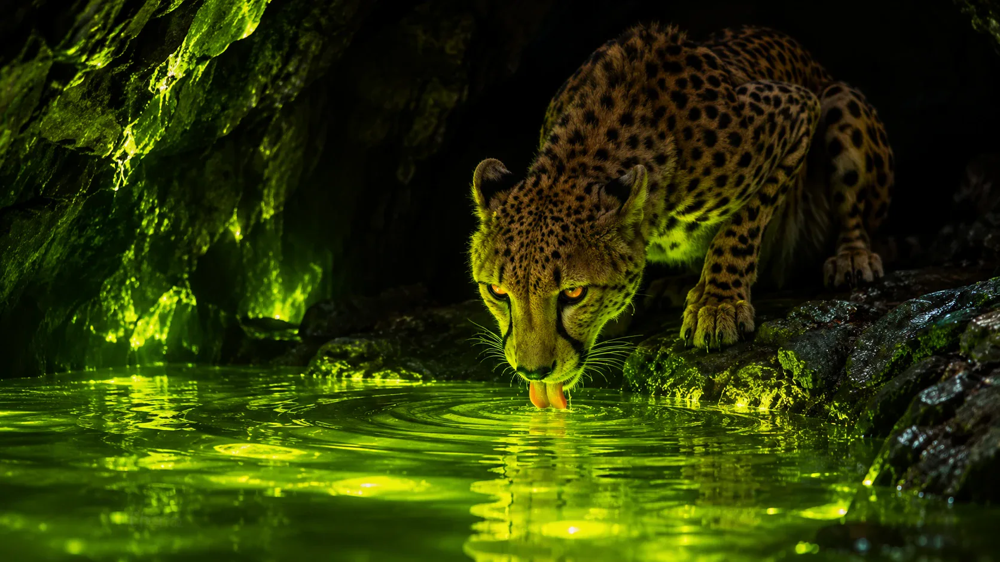
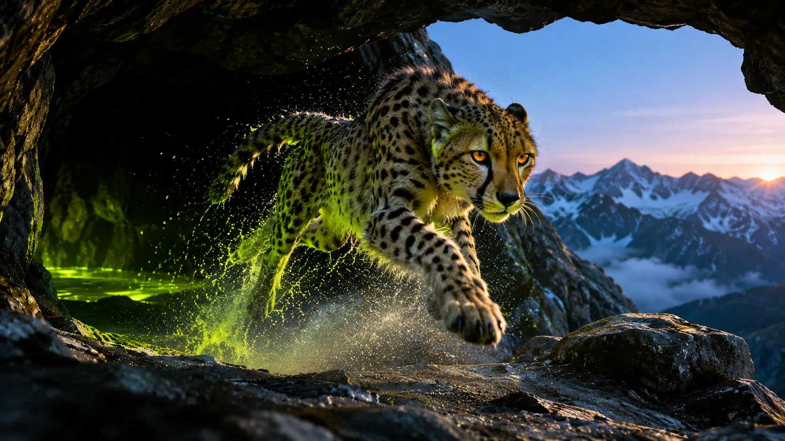
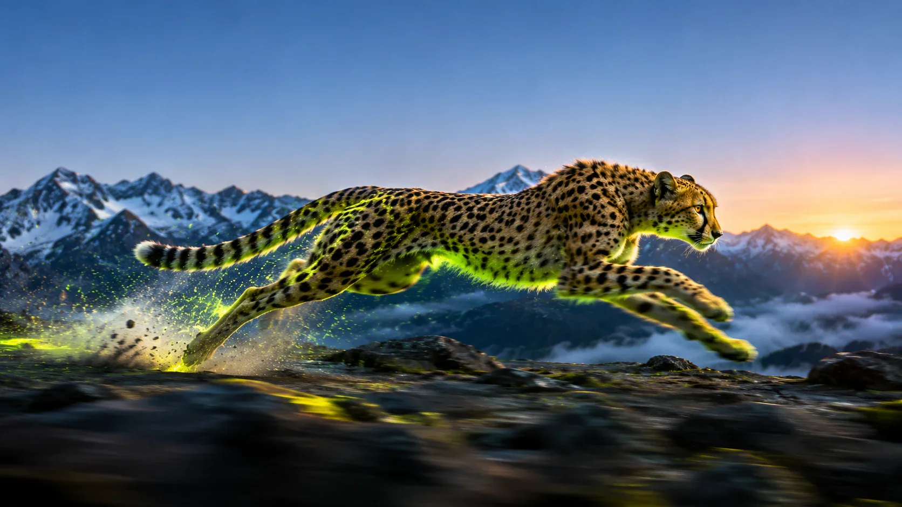

Mountain Dew: a concept commercial. A cheetah finds green liquid deep in a mountain, drinks, and runs.

Straight off the mountain
Something up here is pouring green. Follow it down.
Follow it downThrough the pines, into the rock.

Deep in the mountainSomething's thirsty.
It found the green stuffCold, bright and fizzing up out of the rock.
One long drink

Then it ran

Out of the darkAnd over the ridge before the sun's fully up.
A proper kickCitrus, fizz and a hit of caffeine. Somewhere to be.
Pour it over iceCold, sharp citrus with plenty of fizz.
Same green.
New can.
Our rebrand keeps the colour everyone knows and gives it a mark you could draw from memory: a peak, with a drop running off it.
Concept mark by Oceanalt, drawn for this page. Not Mountain Dew's logo.
Mountain Dew, rebranded: a peak with a drop running off it.
Straight off the mountain.
Concept rebrand by Oceanalt. Not Mountain Dew's logo.
Loud on purpose.
Citrus first
Lemon and lime up front, a little sweetness behind, and a clean finish.
Lots of fizz
Big bubbles that hold up over ice, so the last sip still has bite.
A kick
It has caffeine, so it's a mid-afternoon drink, not a bedtime one.
Find a cold one near you
Pop in your suburb or postcode and we'll show the closest places that stock it.